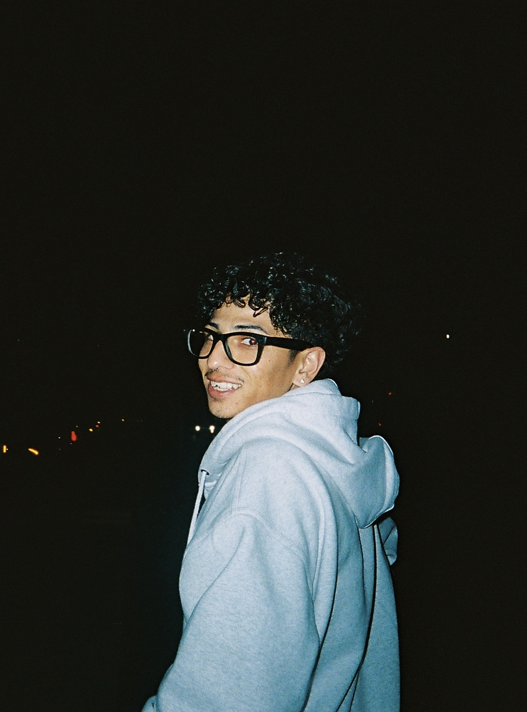

Organically
Molded
Selected Work


Film
35mm photographs, people, places, and moments documented as they happen.
VHS
Moving images, nightlife, memory, and the imperfect texture of tape.
VHS ARCHIVE001 — 2026
Info/Bio
an independent creative practice focused on photography, film, VHS, visual storytelling, and documenting culture as it happens.
bio

Organically Molded is a creative practice based in Sacramento, California. Built around photography, film, VHS, and creative direction, the work is rooted in documenting people, places, moments, and culture as they naturally unfold.
It’s about creating, experimenting, and letting things take shape organically.
sacramento, california
available for selected projects, shoots, and collaborations.
fernando@organicallymolded.co